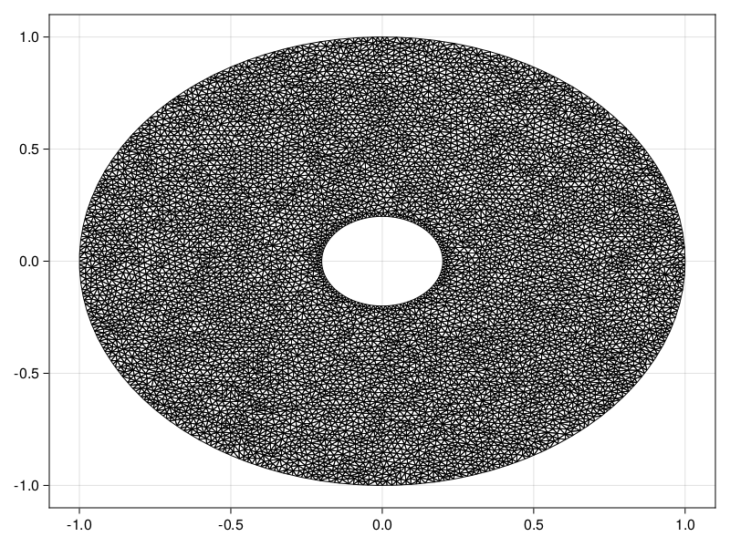
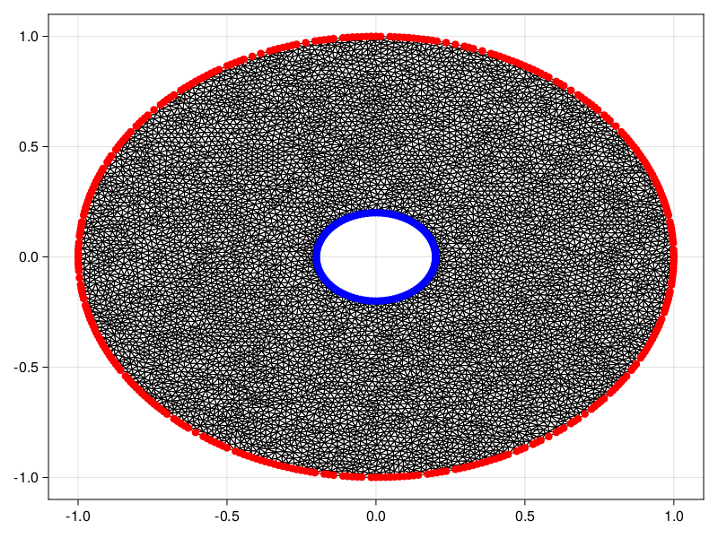
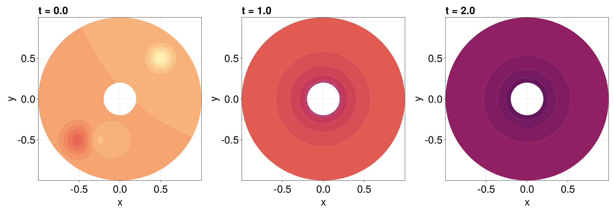
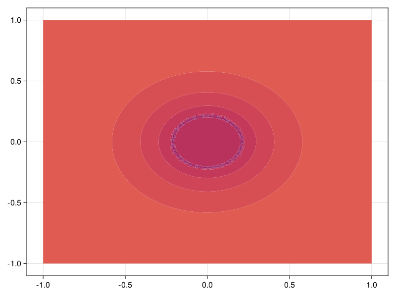
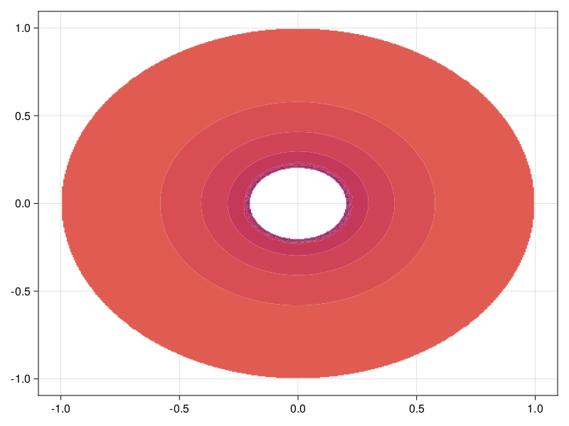

Diffusion Equation on an Annulus
In this tutorial, we consider a diffusion equation on an annulus:
\[\begin{equation} \begin{aligned} \pdv{u(\vb x, t)}{t} &= \grad^2 u(\vb x, t) & \vb x \in \Omega, \\ \grad u(\vb x, t) \vdot \vu n(\vb x) &= 0 & \vb x \in \mathcal D(0, 1), \\ u(\vb x, t) &= c(t) & \vb x \in \mathcal D(0,0.2), \\ u(\vb x, t) &= u_0(\vb x), \end{aligned} \end{equation}\]
demonstrating how we can solve PDEs over multiply-connected domains. Here, $\mathcal D(0, r)$ is a circle of radius $r$ centred at the origin, $\Omega$ is the annulus between $\mathcal D(0,0.2)$ and $\mathcal D(0, 1)$, $c(t) = 50[1-\mathrm{e}^{-t/2}]$, and
\[u_0(x) = 10\mathrm{e}^{-25\left[\left(x+\frac12\right)^2+\left(y+\frac12\right)^2\right]} - 10\mathrm{e}^{-45\left[\left(x-\frac12\right)^2+\left(y-\frac12\right)^2\right]} - 5\mathrm{e}^{-50\left[\left(x+\frac{3}{10}\right)^2+\left(y+\frac12\right)^2\right]}.\]
The complicated task for this problem is the definition of the mesh of the annulus. We need to follow the boundary specification from DelaunayTriangulation.jl, discussed here. In particular, the outer boundary must be counter-clockwise, the inner boundary be clockwise, and we need to provide the nodes as a Vector{Vector{Vector{Int}}}. We define this mesh below.
using DelaunayTriangulation, FiniteVolumeMethod, CairoMakie
R₁ = 0.2
R₂ = 1.0
θ = collect(LinRange(0, 2π, 100))
θ[end] = 0.0 # get the endpoints to match
x = [
[R₂ .* cos.(θ)], # outer first
[reverse(R₁ .* cos.(θ))] # then inner - reverse to get clockwise orientation
]
y = [
[R₂ .* sin.(θ)], #
[reverse(R₁ .* sin.(θ))]
]
boundary_nodes, points = convert_boundary_points_to_indices(x, y)
tri = triangulate(points; boundary_nodes)
A = get_total_area(tri)
refine!(tri; max_area=1e-4A)
triplot(tri)
mesh = FVMGeometry(tri)FVMGeometry with 8302 control volumes, 16163 triangles, and 24465 edgesNow let us define the boundary conditions. Remember, the order of the boundary conditions follows the order of the boundaries in the mesh. The outer boundary came first, and then came the inner boundary. We can verify that this is the order of the boundary indices as follows:
fig = Figure()
ax = Axis(fig[1, 1])
outer = [get_point(tri, i) for i in get_neighbours(tri, -1)]
inner = [get_point(tri, i) for i in get_neighbours(tri, -2)]
triplot!(ax, tri)
scatter!(ax, outer, color=:red)
scatter!(ax, inner, color=:blue)
fig
So, the boundary conditions are:
outer_bc = (x, y, t, u, p) -> zero(u)
inner_bc = (x, y, t, u, p) -> oftype(u, 50(1 - exp(-t / 2)))
types = (Neumann, Dirichlet)
BCs = BoundaryConditions(mesh, (outer_bc, inner_bc), types)BoundaryConditions with 2 boundary conditions with types (Neumann, Dirichlet)Finally, let's define the problem and solve it.
initial_condition_f = (x, y) -> begin
10 * exp(-25 * ((x + 0.5) * (x + 0.5) + (y + 0.5) * (y + 0.5))) - 5 * exp(-50 * ((x + 0.3) * (x + 0.3) + (y + 0.5) * (y + 0.5))) - 10 * exp(-45 * ((x - 0.5) * (x - 0.5) + (y - 0.5) * (y - 0.5)))
end
diffusion_function = (x, y, t, u, p) -> one(u)
initial_condition = [initial_condition_f(x, y) for (x, y) in each_point(tri)]
final_time = 2.0
prob = FVMProblem(mesh, BCs;
diffusion_function,
final_time,
initial_condition)FVMProblem with 8302 nodes and time span (0.0, 2.0)using OrdinaryDiffEq, LinearSolve
sol = solve(prob, TRBDF2(linsolve=KLUFactorization()), saveat=0.2)retcode: Success
Interpolation: 1st order linear
t: 11-element Vector{Float64}:
0.0
0.2
0.4
0.6
0.8
1.0
1.2
1.4
1.6
1.8
2.0
u: 11-element Vector{Vector{Float64}}:
[-1.6918979226151304e-9, -2.6824824758316947e-8, -3.508918015123032e-7, -3.7478900338780008e-6, -3.2376946343892575e-5, -0.0002242588591250139, -0.0012357868125636464, -0.005380630921148495, -0.01840119235904892, -0.04918487388571497 … -3.7663201753599804e-5, 0.0005431826612506959, -2.460044098028259e-10, 0.0001528117539291662, 2.1895889048491276e-16, -1.126519144675507e-5, -2.549478812055236e-6, -5.421104301399492e-6, -3.6470661441248834e-9, 1.3909393975898658e-11]
[0.044643955045655485, 0.016603812983660565, -0.009891867286461879, -0.035181144102065624, -0.05923388109008105, -0.0811372809001713, -0.10114336280695013, -0.11887608424607109, -0.1339044588415386, -0.14624894319945825 … 0.3708172721154203, 1.4158905587030155, 0.30492786073260264, 0.9020055175955997, 0.351001290345418, 0.4024590210038738, 0.16002292831452414, 0.1564640405513925, 0.045499342313931046, 0.5825523285336509]
[1.8556481270156089, 1.843865700495797, 1.8338024751451916, 1.8245926888917572, 1.815761756422751, 1.8084454160133177, 1.8018038843468724, 1.7959553554981165, 1.7912319076288294, 1.7873281014856595 … 2.4272763354684086, 3.5562589798790176, 2.169346376119432, 2.310172280043396, 2.0985881981010155, 2.460336380533982, 2.0664703777323647, 2.0705769934200307, 1.8571776222160312, 2.400735600522014]
[4.383821352623596, 4.377928560327516, 4.373513405107902, 4.369521222186, 4.365309946767001, 4.362267709497676, 4.359337743877075, 4.356626478998147, 4.354521268500549, 4.352644522319239 … 5.087308433947415, 6.285532207975396, 4.728529951580511, 4.637207250863338, 4.597208050991173, 5.122557261201707, 4.647316510999505, 4.654885709289259, 4.38572638173626, 4.9340538837381684]
[7.2883829909011135, 7.285229764997233, 7.283432523674119, 7.281845767714607, 7.279747817473794, 7.278651086109403, 7.27739532955216, 7.276083896626547, 7.275132882134716, 7.27413159530559 … 8.054251722629237, 9.284610520694422, 7.647675751586713, 7.45089334760859, 7.488209913176897, 8.090559814569758, 7.577286494891512, 7.586493795802972, 7.290470117976931, 7.842019079196285]
[10.348746538005768, 10.346861319456474, 10.346258115952468, 10.3457670393773, 10.344641076028786, 10.344426249366323, 10.34393270311146, 10.343260874107262, 10.342833650569954, 10.342231494440226 … 11.130584585445915, 12.353925515016702, 10.709133221077062, 10.469055317181104, 10.53963615963651, 11.166776427181624, 10.644728559423603, 10.654526492983553, 10.350884945219748, 10.895674231553441]
[13.41783876043796, 13.416548822042564, 13.416476754108164, 13.416471435280283, 13.415793704679189, 13.415965136143187, 13.415813034177319, 13.415434017173375, 13.415243252689999, 13.414827939690314 … 14.18572459914154, 15.36655701203935, 13.769389901485427, 13.516978965923231, 13.60000879787835, 14.220839472832882, 13.709272869017045, 13.719068007502297, 13.41994542131352, 13.947601985464786]
[16.40151978425949, 16.40052490763575, 16.40068027349571, 16.400880937779363, 16.40041563122965, 16.400744991278934, 16.40074256760022, 16.400500143892728, 16.40041581749719, 16.400093360243652 … 17.137817845114636, 18.261302677317357, 16.737603769896726, 16.488409554793968, 16.57393116928027, 17.171298105602137, 16.681313821929567, 16.69078040397618, 16.40354296830099, 16.906326670722123]
[19.244115420415607, 19.243280650192357, 19.243525944009697, 19.243805895604417, 19.243446719085416, 19.24383050955356, 19.24389106772412, 19.243714831216, 19.243678286393713, 19.243406534125707 … 19.941429915091163, 21.008729941723423, 19.561692823238406, 19.322719745721763, 19.40622049184334, 19.973114025412862, 19.50899671424892, 19.517991200060298, 19.246030235963456, 19.720554346493326]
[21.915730208678806, 21.914996365017167, 21.915268889585136, 21.915570228029306, 21.915269940540544, 21.915660513585486, 21.915744732377515, 21.915603252723702, 21.91558805952003, 21.915348571482244 … 22.56832748215032, 23.570161522477914, 22.212566699005503, 21.987654878300106, 22.066880573006348, 22.597983212327613, 22.163523345741897, 22.17195298475545, 21.917521070505412, 22.36083815744399]
[24.398102611932387, 24.397448393876868, 24.39771756238634, 24.39801166848742, 24.397751141179057, 24.398123841729404, 24.39821320871709, 24.398093290134767, 24.39808753826488, 24.397873751510723 … 24.99892276262793, 25.93717807041519, 24.670903289354943, 24.463519383425812, 24.536828618171953, 25.02631915767227, 24.62590409678408, 24.63366372258099, 24.399748602373634, 24.807224380372293]fig = Figure(fontsize=38)
for (i, j) in zip(1:3, (1, 6, 11))
ax = Axis(fig[1, i], width=600, height=600,
xlabel="x", ylabel="y",
title="t = $(sol.t[j])",
titlealign=:left)
tricontourf!(ax, tri, sol.u[j], levels=-10:2:40, colormap=:matter)
tightlimits!(ax)
end
resize_to_layout!(fig)
fig
To finish this example, let us consider how natural neighbour interpolation can be applied here. The application is more complicated for this problem since the mesh has holes. Before we do that, though, let us show how we could use pl_interpolate, which could be useful if we did not need a higher quality interpolant. Let us interpolate the solution at $t = 1$, which is sol.t[6]. For this, we need to put the ghost triangles back into tri so that we can safely apply jump_and_march. This is done with add_ghost_triangles!.
add_ghost_triangles!(tri)Now let's interpolate.
x = LinRange(-R₂, R₂, 400)
y = LinRange(-R₂, R₂, 400)
interp_vals = zeros(length(x), length(y))
u = sol.u[6]
last_triangle = Ref((1, 1, 1))
for (j, _y) in enumerate(y)
for (i, _x) in enumerate(x)
T = jump_and_march(tri, (_x, _y), try_points=last_triangle[])
last_triangle[] = indices(T) # used to accelerate jump_and_march, since the points we're looking for are close to each other
if DelaunayTriangulation.is_ghost_triangle(T) # don't extrapolate
interp_vals[i, j] = NaN
else
interp_vals[i, j] = pl_interpolate(prob, T, sol.u[6], _x, _y)
end
end
end
fig, ax, sc = contourf(x, y, interp_vals, levels=-10:2:40, colormap=:matter)
figLet's now consider applying NaturalNeighbours.jl. We apply it naively first to highlight some complications.
using NaturalNeighbours
_x = vec([x for x in x, y in y]) # NaturalNeighbours.jl needs vector data
_y = vec([y for x in x, y in y])
itp = interpolate(tri, u, derivatives=true)Natural Neighbour Interpolant
z: [10.348746538005768, 10.346861319456474, 10.346258115952468, 10.3457670393773, 10.344641076028786, 10.344426249366323, 10.34393270311146, 10.343260874107262, 10.342833650569954, 10.342231494440226 … 11.130584585445915, 12.353925515016702, 10.709133221077062, 10.469055317181104, 10.53963615963651, 11.166776427181624, 10.644728559423603, 10.654526492983553, 10.350884945219748, 10.895674231553441]
∇: [(0.007902876288860909, -0.02464861740093043), (-0.056792950478343956, -0.00692297842861935), (-0.024252826350056354, -0.025775873443177652), (0.011610254604831288, -0.015497459926728366), (-0.008488105818579585, -0.02612827482266705), (0.00797597582811902, -0.016790637614796804), (0.0051533369605144454, -0.0117201100984192), (0.02105136937969995, -0.0064582680392110195), (0.0011982639743528545, -0.01389708692157715), (-0.038362480070240505, -0.02113497312754954) … (-0.1148954473919527, -5.591745656718733), (9.58592089516532, -2.3361726597987964), (0.8103002202687277, -3.491664327018057), (1.6570906890338097, -0.08487435902618382), (-2.1581974646719613, 1.2240400327007328), (0.11436545567487062, -5.736673027968825), (-3.2519485116160016, -0.048122680009122495), (-3.3073027551006198, -0.1176687443271727), (-0.2668988124640796, -0.028222844079806214), (-3.2734642647391237, 3.054227912175498)]
H: [(15.289975941396726, -0.2984285602870008, 0.29121342071366907), (12.316175437224809, 0.7152394795526207, 0.7588868447872491), (13.344571153938794, 0.5332743794791313, 1.4555726705719156), (15.677584859578694, 0.4447390027986082, 2.885604758909539), (13.417716347036967, 1.0320299321696516, 3.06532039182698), (12.662930590770795, 0.8984694787836601, 4.43222341370752), (12.102491520060916, 1.476358965044609, 5.2464957424269105), (12.8506894119978, 2.7848136002160135, 6.400320292179324), (11.029049038034094, 2.5212785112802494, 5.808248575146184), (7.440602323330306, 3.6894463218626976, 5.172914604362284) … (-7.800625697277741, 23.397994080889532, 0.5482123978537053), (29.80398408077759, -15.05343640318838, -11.441566537486635), (-3.347716933579935, 18.550070707540197, -5.446980344322785), (17.17282184232309, -1.7543932137779517, -0.8276372113031158), (12.91040879372482, 2.380951076005965, -9.22310740590602), (-8.004047588355686, 23.827979802192157, -0.8090367682513445), (19.609710426424048, -3.6473122172170416, 0.313612745894838), (19.37229932229993, -4.10498459713209, 0.7602417980967664), (15.457818826812748, -0.2522394926957458, 0.11430674356080472), (8.230818208087603, 6.644721181824433, -13.505992737058461)]itp_vals = itp(_x, _y; method=Farin())160000-element Vector{Float64}:
10.395792330681005
10.395822522112113
10.389859782151632
10.38983690500595
10.389814027860297
⋮
10.333814927341592
10.333683082360096
10.333551237378572
10.333419392397047
10.333287547415523fig, ax, sc = contourf(x, y, reshape(itp_vals, length(x), length(y)), colormap=:matter, levels=-10:2:40)
fig
The issue here is that the interpolant is trying to extrapolate inside the hole and outside of the annulus. To avoid this, you need to pass project=false.
itp_vals = itp(_x, _y; method=Farin(), project=false)160000-element Vector{Float64}:
Inf
Inf
Inf
Inf
Inf
⋮
Inf
Inf
Inf
Inf
Inffig, ax, sc = contourf(x, y, reshape(itp_vals, length(x), length(y)), colormap=:matter, levels=-10:2:40)
fig
Just the code
An uncommented version of this example is given below. You can view the source code for this file here.
using DelaunayTriangulation, FiniteVolumeMethod, CairoMakie
R₁ = 0.2
R₂ = 1.0
θ = collect(LinRange(0, 2π, 100))
θ[end] = 0.0 # get the endpoints to match
x = [
[R₂ .* cos.(θ)], # outer first
[reverse(R₁ .* cos.(θ))] # then inner - reverse to get clockwise orientation
]
y = [
[R₂ .* sin.(θ)], #
[reverse(R₁ .* sin.(θ))]
]
boundary_nodes, points = convert_boundary_points_to_indices(x, y)
tri = triangulate(points; boundary_nodes)
A = get_total_area(tri)
refine!(tri; max_area=1e-4A)
triplot(tri)
mesh = FVMGeometry(tri)
fig = Figure()
ax = Axis(fig[1, 1])
outer = [get_point(tri, i) for i in get_neighbours(tri, -1)]
inner = [get_point(tri, i) for i in get_neighbours(tri, -2)]
triplot!(ax, tri)
scatter!(ax, outer, color=:red)
scatter!(ax, inner, color=:blue)
fig
outer_bc = (x, y, t, u, p) -> zero(u)
inner_bc = (x, y, t, u, p) -> oftype(u, 50(1 - exp(-t / 2)))
types = (Neumann, Dirichlet)
BCs = BoundaryConditions(mesh, (outer_bc, inner_bc), types)
initial_condition_f = (x, y) -> begin
10 * exp(-25 * ((x + 0.5) * (x + 0.5) + (y + 0.5) * (y + 0.5))) - 5 * exp(-50 * ((x + 0.3) * (x + 0.3) + (y + 0.5) * (y + 0.5))) - 10 * exp(-45 * ((x - 0.5) * (x - 0.5) + (y - 0.5) * (y - 0.5)))
end
diffusion_function = (x, y, t, u, p) -> one(u)
initial_condition = [initial_condition_f(x, y) for (x, y) in each_point(tri)]
final_time = 2.0
prob = FVMProblem(mesh, BCs;
diffusion_function,
final_time,
initial_condition)
using OrdinaryDiffEq, LinearSolve
sol = solve(prob, TRBDF2(linsolve=KLUFactorization()), saveat=0.2)
fig = Figure(fontsize=38)
for (i, j) in zip(1:3, (1, 6, 11))
ax = Axis(fig[1, i], width=600, height=600,
xlabel="x", ylabel="y",
title="t = $(sol.t[j])",
titlealign=:left)
tricontourf!(ax, tri, sol.u[j], levels=-10:2:40, colormap=:matter)
tightlimits!(ax)
end
resize_to_layout!(fig)
fig
add_ghost_triangles!(tri)
x = LinRange(-R₂, R₂, 400)
y = LinRange(-R₂, R₂, 400)
interp_vals = zeros(length(x), length(y))
u = sol.u[6]
last_triangle = Ref((1, 1, 1))
for (j, _y) in enumerate(y)
for (i, _x) in enumerate(x)
T = jump_and_march(tri, (_x, _y), try_points=last_triangle[])
last_triangle[] = indices(T) # used to accelerate jump_and_march, since the points we're looking for are close to each other
if DelaunayTriangulation.is_ghost_triangle(T) # don't extrapolate
interp_vals[i, j] = NaN
else
interp_vals[i, j] = pl_interpolate(prob, T, sol.u[6], _x, _y)
end
end
end
fig, ax, sc = contourf(x, y, interp_vals, levels=-10:2:40, colormap=:matter)
fig
using NaturalNeighbours
_x = vec([x for x in x, y in y]) # NaturalNeighbours.jl needs vector data
_y = vec([y for x in x, y in y])
itp = interpolate(tri, u, derivatives=true)
itp_vals = itp(_x, _y; method=Farin())
fig, ax, sc = contourf(x, y, reshape(itp_vals, length(x), length(y)), colormap=:matter, levels=-10:2:40)
fig
itp_vals = itp(_x, _y; method=Farin(), project=false)
fig, ax, sc = contourf(x, y, reshape(itp_vals, length(x), length(y)), colormap=:matter, levels=-10:2:40)
figThis page was generated using Literate.jl.